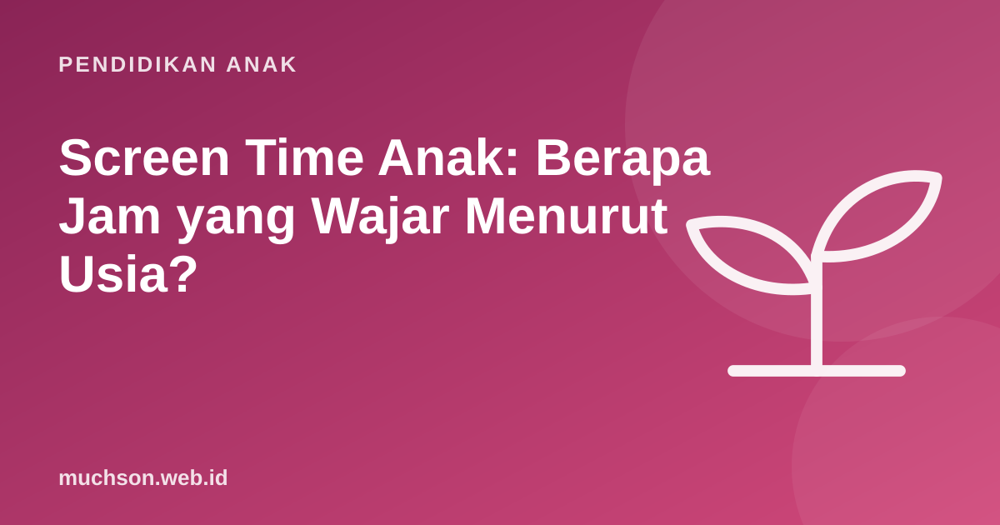

Beranda › Artikel › Pendidikan Anak
Pendidikan AnakScreen Time Anak: Berapa Jam yang Wajar Menurut Usia?
"Berapa lama anak boleh main HP?" adalah salah satu pertanyaan yang paling sering diajukan orang tua. Jawabannya tidak hanya soal jam, tetapi juga usia, jenis kegiatan, dan apa yang tergeser oleh layar. Artikel ini merangkum rekomendasi organisasi kesehatan, lalu membantu Anda menyusun aturan yang realistis untuk keluarga.

Rekomendasi resmi per usia
Dua rujukan yang paling sering dipakai adalah pedoman WHO (2019) untuk anak di bawah 5 tahun, dan kebijakan American Academy of Pediatrics (AAP). Dokter anak di Indonesia, termasuk dari Ikatan Dokter Anak Indonesia (IDAI), umumnya menyampaikan anjuran yang sejalan.
| Usia | Rekomendasi | Sumber |
|---|---|---|
| Di bawah 1 tahun | Tidak dianjurkan screen time | WHO 2019 |
| 1-2 tahun | Sebaiknya tidak ada screen time pasif; panggilan video dengan keluarga boleh. Jika dikenalkan di usia 18-24 bulan, pilih konten berkualitas dan tonton bersama | WHO 2019, AAP 2016 |
| 2-5 tahun | Maksimal 1 jam per hari, lebih sedikit lebih baik, konten berkualitas dan ditemani | WHO 2019, AAP 2016 |
| 6 tahun ke atas | Tidak ada angka tunggal. Batas yang konsisten, dan layar tidak boleh menggeser tidur, aktivitas fisik, dan waktu keluarga | AAP 2016 |
Untuk anak usia sekolah, AAP sengaja tidak memberi angka jam tunggal. Yang dinilai adalah apakah kebutuhan dasar terpenuhi dulu: tidur cukup, bergerak, belajar, dan berinteraksi dengan keluarga. Layar mengisi sisa waktu, bukan sebaliknya.
Apa kata penelitian?
Sebuah studi kohort di Kanada oleh Madigan dan rekan (2019, JAMA Pediatrics) mengikuti hampir 2.500 anak. Anak dengan screen time lebih tinggi pada usia 2 dan 3 tahun cenderung mendapat skor lebih rendah pada tes skrining perkembangan setahun atau dua tahun kemudian. Studi seperti ini menunjukkan hubungan, belum tentu sebab-akibat, tetapi polanya konsisten dengan anjuran membatasi layar di usia dini.
Untuk anak yang lebih besar, penelitian menunjukkan masalah utama sering bukan layarnya, melainkan apa yang digantikan: tidur yang terpotong, kurang gerak, dan berkurangnya interaksi tatap muka. Itulah kenapa pendekatan "isi kebutuhan dasar dulu" lebih berguna daripada sekadar menghitung menit.
Hitung sisa waktu anak
Kalkulator ini meniru ide di balik Family Media Plan dari AAP: mulai dari 24 jam, kurangi kebutuhan pokok, lalu lihat berapa sisa waktu yang realistis. Angka awal adalah contoh anak SD.
Tidak semua waktu layar sama
Satu jam menonton video pendek berbeda dengan satu jam membuat animasi atau panggilan video dengan nenek. Gunakan pembagian sederhana ini saat membuat aturan:
Tanda waktu layar sudah berlebihan
Jika banyak yang tercentang, itu sinyal untuk menata ulang aturan, bukan alasan untuk panik. Jika masalahnya berat dan berlangsung lama, misalnya mengganggu sekolah dan tidur selama berbulan-bulan, konsultasikan dengan dokter anak atau psikolog.
Membuat aturan keluarga yang berhasil
- Libatkan anak. Aturan yang ikut disusun anak lebih mudah dipatuhi.
- Zona bebas layar. Misalnya meja makan dan kamar tidur.
- Jam malam gawai. Gawai diisi daya di luar kamar, satu jam sebelum tidur.
- Prioritas kegiatan mencipta. Waktu layar untuk membuat sesuatu didahulukan daripada menonton.
- Orang tua ikut aturan. Anak meniru, bukan mendengar.
- Evaluasi rutin. Tinjau aturan setiap beberapa bulan atau setelah liburan.
Waktu layar yang paling bernilai adalah ketika anak menjadi pencipta. Jika Anda ingin mengisi sebagian jatah layar dengan kegiatan seperti itu, coba pelajaran coding gratis di PixelKode yang dirancang sekitar 45 menit per pelajaran.
Tanya jawab
Berapa jam screen time anak usia 2-5 tahun?
Bolehkah bayi menonton video?
Berapa screen time yang wajar untuk anak SD?
Apakah belajar online dihitung screen time?
Sumber dan bacaan lanjut
- WHO (2019). Guidelines on physical activity, sedentary behaviour and sleep for children under 5 years of age
- AAP Council on Communications and Media (2016). Media and Young Minds. Pediatrics
- AAP (2016). Media Use in School-Aged Children and Adolescents. Pediatrics
- Madigan, S. dkk. (2019). Association between screen time and children's performance on a developmental screening test. JAMA Pediatrics
- AAP Family Media Plan (HealthyChildren.org)